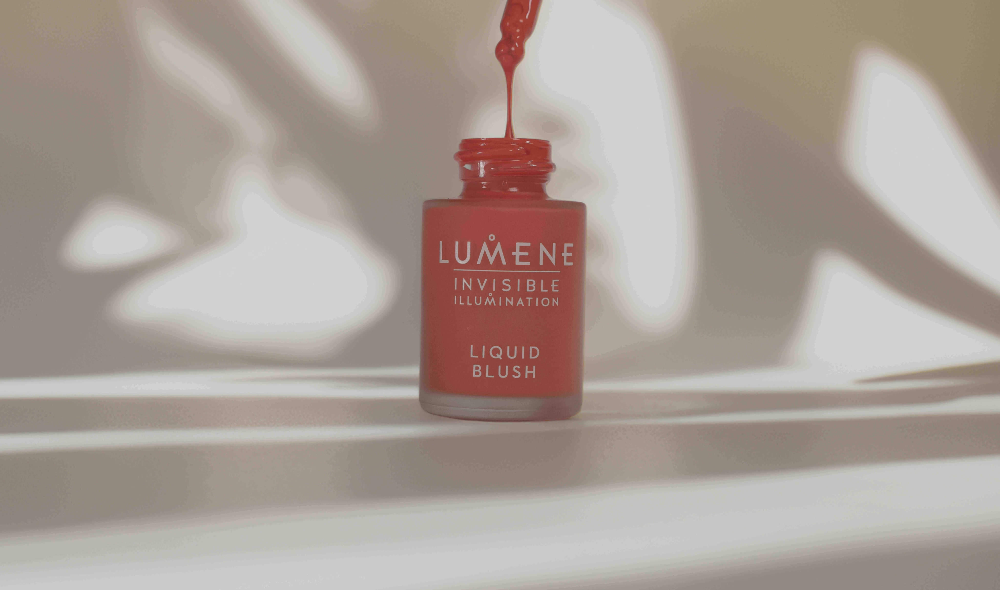
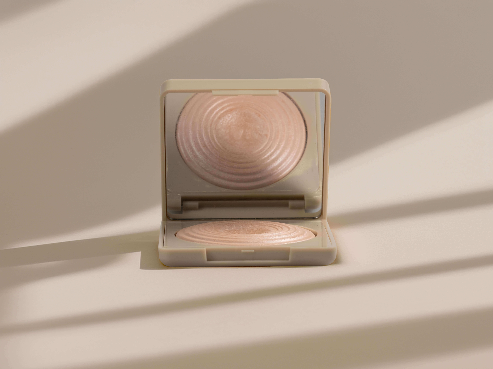
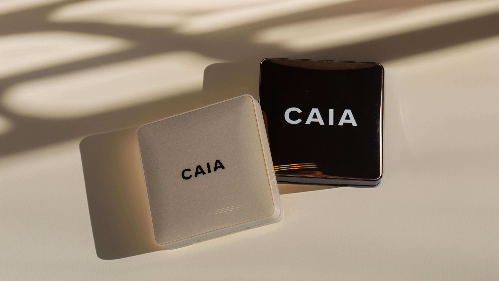

Fotografi
Produktfotografi
Produktbilleder udviklet med fokus på æstetik, branding og visuel identitet inspireret af moderne beauty-universer.




Om projektet
Dette projekt blev fotograferet i skolens fotostudie med adgang til professionelt lysudstyr, kamera og backdrop.
Formålet var at udvikle stemningsfulde produktbilleder med fokus på branding, styling og visuel identitet inspireret af beauty- og livsstilsbranchen.
I processen arbejdede jeg med lysopsætning, komposition, farver og produktplacering for at skabe et elegant og moderne visuelt udtryk.
Efter fotograferingen blev billederne redigeret i Adobe Photoshop, hvor jeg blandt andet arbejdede med farvejusteringer, baggrund og billedbehandling.
Jeg benyttede også AI-funktioner i Photoshop til at skabe et varmere og mere naturligt visuelt univers med inspiration fra moderne beauty-brands.
Projektet har styrket mine kompetencer inden for produktfotografi, styling, billedredigering og visuel branding.
Fokus
Produktfotografi, styling og lysopsætning.
Stil
Minimalistisk beauty-æstetik inspireret af moderne branding og naturlige farvetoner.